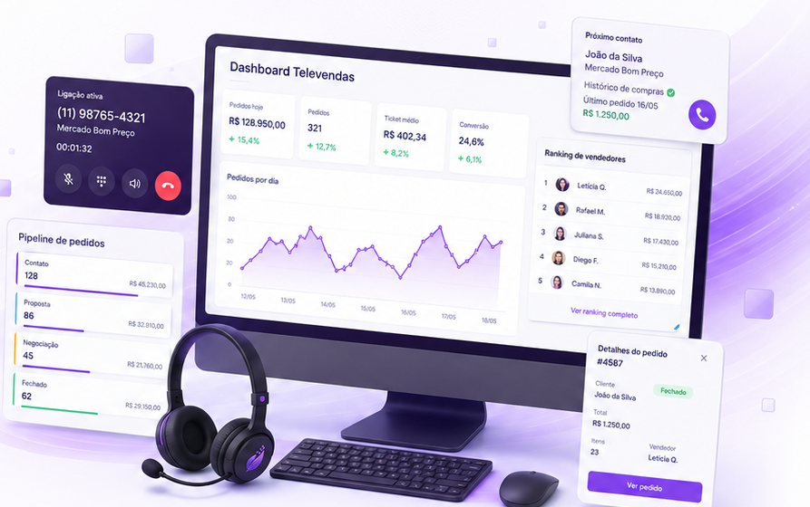
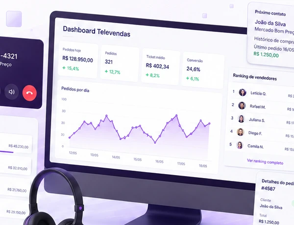

Selecione o cliente
O operador inicia o atendimento com dados do cliente e contexto comercial.
A Epiper organiza cliente, produtos, histórico e pedido em uma experiência única para o operador trabalhar com mais velocidade e menos troca de tela.

A tela é pensada para o operador encontrar o que precisa enquanto conversa com o cliente e conduz a venda.
O operador inicia o atendimento com dados do cliente e contexto comercial.
Busca produtos, histórico, preço, estoque e condições relevantes.
Inclui itens e conduz a venda em um fluxo mais organizado.
O pedido segue para integração e acompanhamento do processamento.
A proposta é aproximar cliente, produto e regra comercial no momento em que a venda acontece.
Uma tela pensada para a rotina de quem vende por telefone ou atendimento assistido.
Contexto do cliente junto do fluxo de criação do pedido.
Encontre itens com mais agilidade durante o atendimento.
Informações comerciais importantes próximas do operador.
Apoio para acompanhar pedidos e dar retorno ao cliente.
Pedido e dados comerciais conectados à operação existente.

Cliente, produtos, histórico e informações comerciais ficam próximos para apoiar a venda e acelerar a criação do pedido.
A Epiper organiza o atendimento em uma camada comercial própria e se conecta ao ERP da empresa. WinThor TOTVS é um cenário de destaque, mas a arquitetura pode ser adaptada a outros sistemas.
Mostre como sua equipe atende hoje, quais informações consulta e como o pedido chega ao ERP. A Epiper estrutura a solução de acordo com esse cenário.